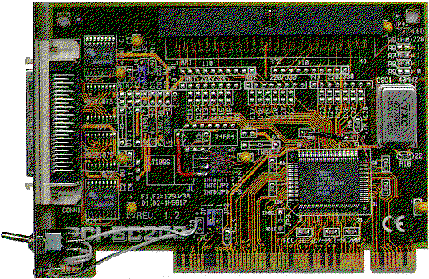

Die vorbereitung des EEPROMs:
Die oberen 4 Pins nach oben biegen und die unteren 4 Pin's miteinan-
der verbinden durch entsprechende umbiegen der entsprechenden
Anschlußbeinchen.

Der Pin 48 am 53C810(A) ist SDA und der Pin 49 ist
SCL. Der Pin 1 ist auf der Ecke mit dem Punkt.
Zur Kontrolle: Pin 46 und Pin 50 ist GND (Vss).
Zumindest beim Asus SC200 Hostadapter ist die Pin-
nummer in weißer Farbe auf der Platine aufgedruckt.
Die Pin's 50/51 sind die auf der Ecke gegenüber von
dem Punkt bei Pin 1.
Das EEPROM 24C16 im 8-poligen DIL oder SO-Gehäuse ist wie folgt
belegt:
1 = A0 -> GND (Vss) 5 = SDA -> 53C810 an Pin 48
2 = A1 -> GND (Vss) 6 = SCL -> 53C810 an Pin 49
3 = A2 -> GND (Vss) 7 = WP -> GND (Vss)
4 = GND 8 = Vcc -> +5V
Im Klartext: Die Pin's 1, 2, 3, 4 und 7 des EEPROM müssen miteinander
verbunden werden.
Das EEPROM kann man mittels des Pin 4 in der Masselocation des nicht-
bestückten 74F04 ICs auf der Platine befestigen. Die restlichen Pin's
müssen dann mittels Fädeldraht auf der Platine verlötet werden.
So sieht das ganze dann in der Aufsicht aus:

Ps.: Über den Schalter im Slotblech wird bei meinem SC200 die aktive
Terminierung ein- oder ausgeschaltet und die entsprechende Funk-
tion (Terminierung An oder Aus) über die rote LED samt Vorwider-
stand angezeigt.
weiterblättern
Kapitel Der Asus SC200 SCSI Hostadapter, Seite 2